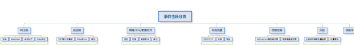
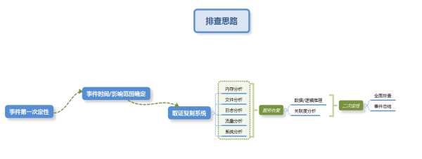
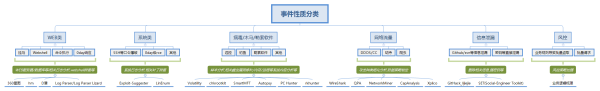

应急响应笔记
定义
应急响应服务是指为了应对各种意外事件的发生所做的准备以及在事件发生后所采取的措施的服务。例如：系统被入侵、重要信息被窃取、系统拒绝服务、网络流量异常等。
目标
采取紧急措施和行动，恢复业务到正常状态；调查安全事件发生的原因，避免同类事件再次发生；在需要司法机关介入时，提供法律认可的数字证据。
要求
应急响应是一项需要充分准备并严密组织的工作，开展调查工作的过程中，要避免不正确的步骤或者遗漏重要步骤对系统产生新的影响。这就需要掌握一定的追踪能力、沟通能力的专业安全人员参与。安全厂商常年研究安全技术、实时跟踪安全动态，对分析和解决各类安全事件有成熟的技术手段和丰富的经验，能为其客户提供可靠的技术服务支持。每一次的应急响应客户不仅仅只是需要一个简单的应急和服务的可用性,更重要的是对黑客行为的全面分析,以资产为核心来分析黑客思维,尽可能明白整个事件的前因后果以及后续的安全排查加固等措施。
流程
从业务流程方式可以分为调查，评估，抑制，分析，恢复以及报告的流程。
心得
1.在开始接触应急业务之前一定要向客户询问详细事件的发生情况，比如事件发生时间（点或段），事件造成的实际破坏，客户的具体需求和要求。
2.根据了解情况先做攻击性质预判，迅速找出关键排查点，尽快恢复业务正常化，在实施过程中注意规范操作。

3.通过对事件的定性以及取证后有选择的先分析重点内容，基本思路：

4.先定性，在定向，后全量分析，对应排查工具：
